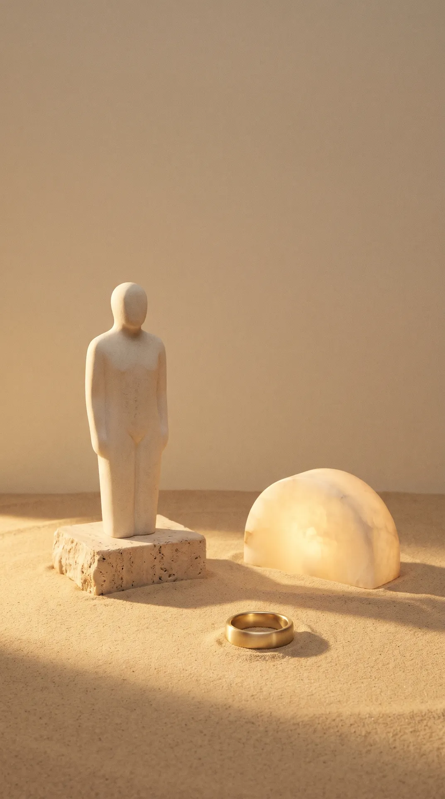
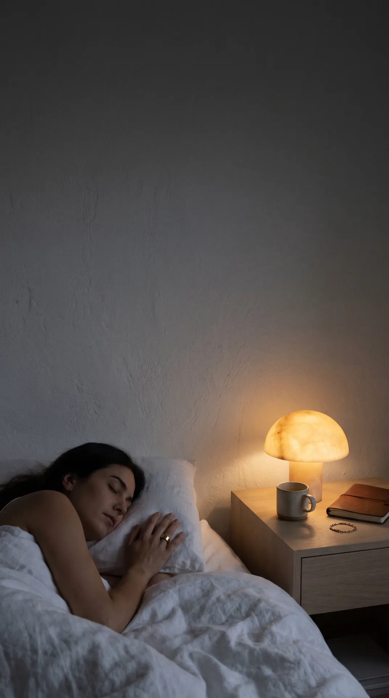
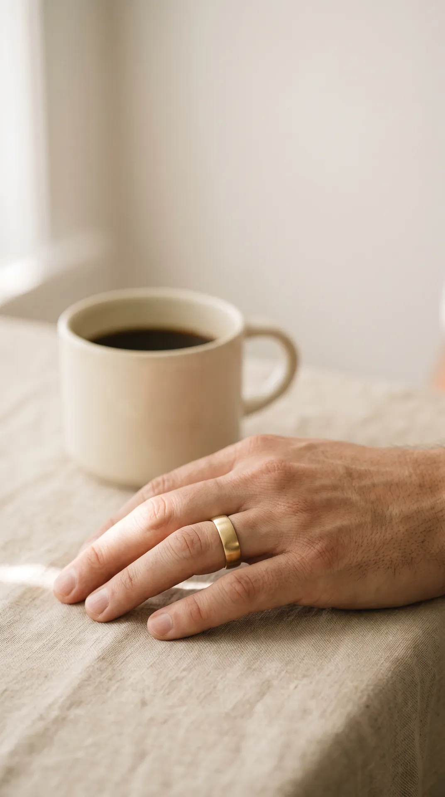
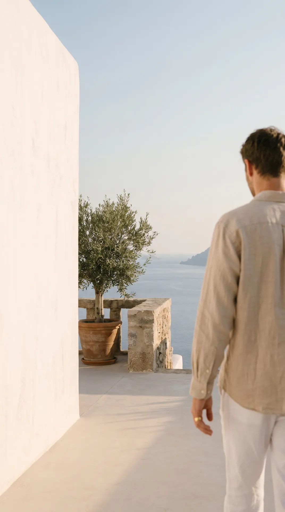
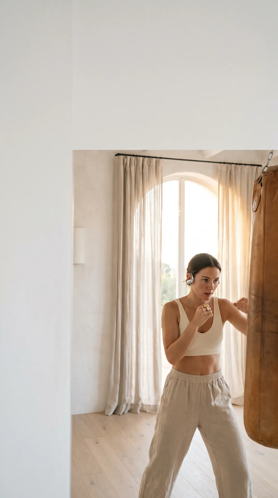
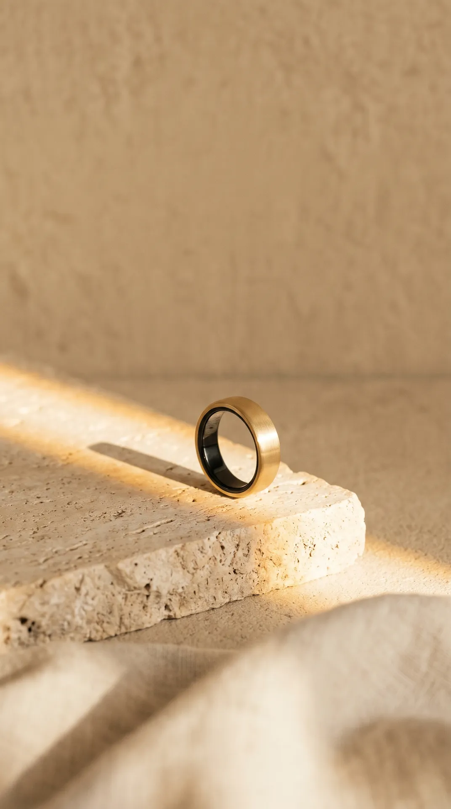

Tu cuerpo, hoy.Alma lo escucha.
Conecta tu anillo o Apple Salud para ver tu día.

Descansa.Alma cuida la noche.
Te dormiste—
Despertaste—

Tu pulso,en calma.
El anillo lo mide solo. Si quieres, mídelo ahora.

Muévete.Alma lleva
la cuenta.
km—
kcal—
Meta—%

Entrena.Alma va contigo.
Minutos—
Sesiones—
kcal—
Respira.Un minuto con Alma.
Inhala cuando la roca crezca. Exhala cuando se encoja.
Inhala 4 · sostén 4 · exhala 6

Un toque.Alma está ahí.
Apple SaludTu reloj y tu iPhonePasos, pulso, sueño y ejercicios
Datos de ejemplo · así se ve con tu anillo o Apple Salud